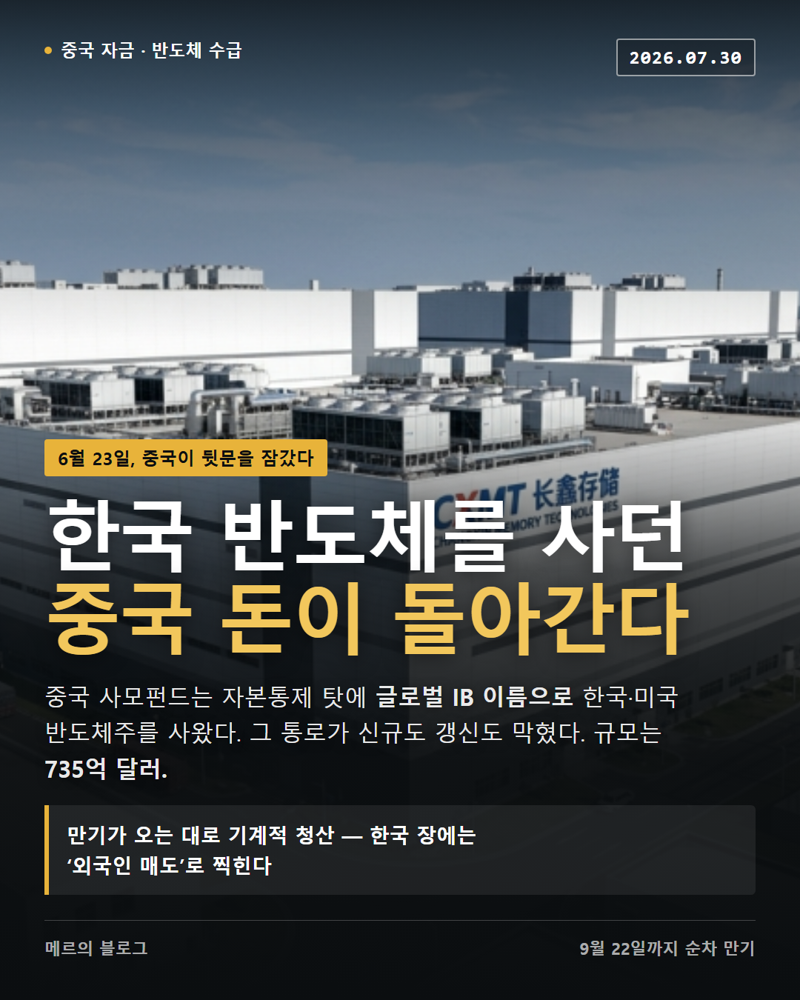
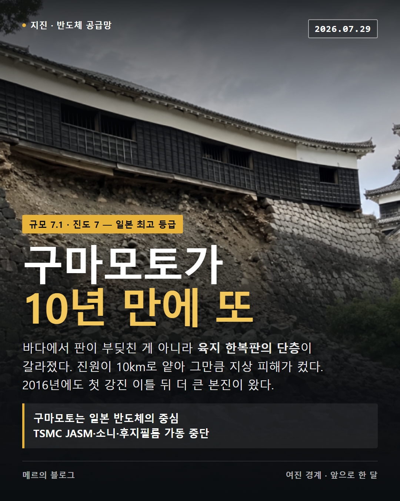

긴 글을 두 갈래로 다시 읽습니다. 훑고 싶으면 카드, 이해하고 싶으면 서술. 원문의 숫자와 순서는 건드리지 않습니다.

중국이 6월 23일 해외 우회 투자 통로를 막았다. 갱신까지 막힌 탓에 만기가 오는 대로 청산이 이어진다.

구마모토 지진과 반도체 공급망, 우크라이나 권력구조, 엔비디아·오픈AI 순환금융, CXMT 상장, 레버리지 ETF의 원금 감쇠까지.